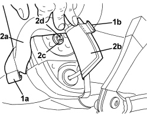

7045A47 BACKREST ADJUSTMENT DEVICE FOR ONE SEAT, LEFT OR RIGHT - R.R.
- Path
- Procedures > 70 FITTINGS > 7045 FRONT SEATS > 7045A FRONT SEAT ASSEMBLY > 7045A47 BACKREST ADJUSTMENT DEVICE FOR ONE SEAT, LEFT OR RIGHT - R.R.
- Kind
- repair procedure (removal / refitting; the operation number is the code)
- Applies to
- all engines; all production periods; only with equipment: Electric seats
- Interactive page
- https://sloeber94.github.io/elrnDB/#/939005558
Applies to: all engines; all production periods; only with equipment: Electric seats
 Removing
Removing
 Refitting
RefittingOp. 7045A10 FRONT SEAT (ONE), LEFT OR RIGHT - R.R.
Op. 7045A43 FRONT SEAT EXTERIOR GUARD (ONE), LEFT OR RIGHT - R.R
1. Working on the lower inner side of the backrest, disconnect the backrest trim link (1a) and cushion trim link (1b).
2. Move trim edges (2a) and (2b) and remove retainer (2c) from rod (2d).

Applies to: all engines; all production periods; only with equipment: Electric seats
1. Working from the backrest tilt motor side, remove the retainer from the rod.
2. Extract the rod.

Applies to: all engines; all production periods; only with equipment: Electric seats
Refitting
Removing- Check that the rod is not damaged.
- Place the rod in position.
- Apply the retainers to the ends of the rod.
- Position the edges of the trim and connect the links.
Op. 7045A43 FRONT SEAT EXTERIOR GUARD (ONE), LEFT OR RIGHT - R.R